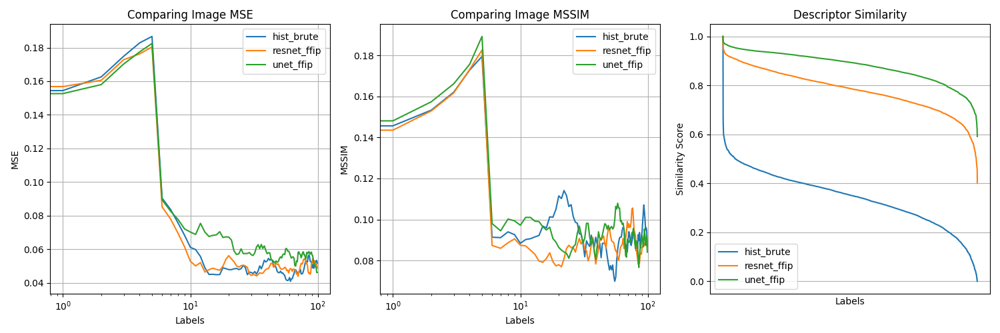
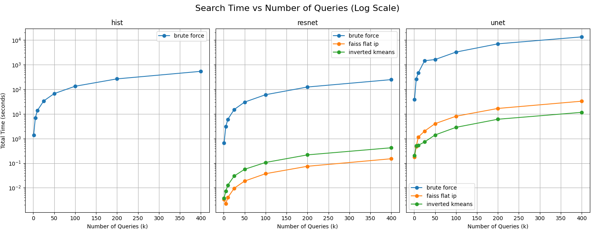

FathomMap¶
Overview¶

Underwater Content-Based Image Retrieval.
graph LR
Q[Query]
D[Descriptor]
S[Searcher]
DB[(Database)]
R[Results]
Q --> |image|D
D --> |feature vector|S
S --> |feature vector|DB --> |images|S
S --> |images|RFathomMap is a Content-Based Image Retrieval (CBIR) framework designed to evaluate and compare multiple retrieval pipelines for underwater imagery. The project explores how different Descriptors (feature extractors) and Searchers affect retrieval accuracy and efficiency, with a particular focus on leveraging learned representations from the FathomView UNet model - a previous project for enhancing underwater images.
Given a query image, FathomMap first extracts a compact feature vector using an image Descriptor (e.g., UNet-based encoder, pretrained ResNet18, HE). These feature vectors are then compared against a database of precomputed desciptors using an image Searcher (e.g., linear search or indexing with FAISS and inverted K-Means clustering).
A key motivation for this project is to assess whether a UNet trained for underwater image enhancement can also serve as an effective semantic descriptor for retrieval, compared against more conventional CNN-based or classical approaches.
The overall system architecture is illustrated above, highlighting the separation of feature extraction, image/feature storage and similarity search.
Results¶
The following MSE and MS-SSIM metrics are explained more in my complementary project - FathomView - where they were used to compose a loss function for training a custom UNet model to enhance underwater images.

This figure evaluates the accuracy of selected image descriptors.
FathomMap's UNet Descriptor outperforms other approaches.
The plot on the right shows the degree of similarity between the query image and the returned images.
The plots comparing MSE and MS-SSIM reinforce this evaluation by showing the
model's attention to both pixel-level (MSE) and structural (MS-SSIM) similarities.

This figure evaluates the efficiency of selected image searchers/index strategies.
The key take-away here is that FAISS outperforms inverted K-Means for UNet descriptors
because the enhancement-trained UNet features are highly correlated and poorly clustered,
while ResNet's features are semantically separable and benefit more from clister-based pruning.
This illustrates the importance in separating the image descriptors and searchers for evaluation.
Key Components¶
Descriptors¶
class fathommap.descriptors.Base(ABC)
class fathommap.descriptors.UNet(Base)
class fathommap.descriptors.ResNet(Base)
class fathommap.descriptors.Histogram(Base)
# Abstract base class for Content-Based Image Retrieval (CBIR) descriptors.
class BaseDescriptor(ABC):
@abstractmethod
def describe(self, image: np.ndarray) -> np.ndarray:
# Returns features extracted from the given `image`.
@property
@abstractmethod
def name(self) -> str:
# Returns the name of the descriptor.
class UNetDescriptor(BaseDescriptor):
def __init__(self, model_path):
unet = Unet()
unet.load_state_dict(torch.load(model_path))
unet.eval()
transform = transforms.Compose([
transforms.ToPILImage(),
transforms.ToTensor(),
transforms.Resize((224, 224)),
transforms.Normalize(
mean=[0.5, 0.5, 0.5],
std=[0.5, 0.5, 0.5],
)
])
self.unet = unet
self.transform = transform
def describe(self, image: np.ndarray) -> np.ndarray:
_image = copy.deepcopy(image)
_image = cv2.cvtColor(_image, cv2.COLOR_BGR2RGB)
_image = self.transform(_image)
_image = _image.unsqueeze(0)
with torch.no_grad():
features = self.unet(_image)
features = features.flatten().numpy()
return features
class ResNetDescriptor(BaseDescriptor):
def __init__(self):
resnet = models.resnet18(weights=models.ResNet18_Weights.DEFAULT)
resnet.eval()
transform = transforms.Compose([
transforms.ToPILImage(),
transforms.Resize((224, 224)),
transforms.ToTensor(),
transforms.Normalize( # normalize with ImageNet values
mean=[0.485, 0.456, 0.406],
std=[0.229, 0.224, 0.225]
),
])
self.resnet = resnet
self.transform = transform
def describe(self, image: np.ndarray) -> np.ndarray:
_image = copy.deepcopy(image)
_image = cv2.cvtColor(_image, cv2.COLOR_BGR2RGB)
_image = self.transform(_image)
_image = _image.unsqueeze(0)
with torch.no_grad():
features = self.resnet(_image)
features = features.flatten().numpy()
return features
class HistDescriptor(BaseDescriptor):
def __init__(self, bins):
self.bins = bins
def describe(self, image: np.ndarray) -> np.ndarray:
_image = copy.deepcopy(image)
_image = cv2.cvtColor(_image, cv2.COLOR_BGR2HSV)
features = []
# Divide the image into four segments and an elliptical center.
(h, w) = _image.shape[:2]
(cx, cy) = (int(w * 0.5), int(h * 0.5)) # center point
segments = [
(0, cx, 0, cy), # top left
(cx, w, 0, cy), # top right
(cx, w, cy, h), # bottom right
(0, cx, cy, h), # bottom left
]
(ax, ay) = (int(w * 0.75) // 2, int(h * 0.75) // 2)
ellipse_mask = np.zeros(_image.shape[:2], dtype="uint8")
cv2.ellipse(ellipse_mask, (cx, cy), (ax, ay), 0, 0, 360, 255, -1)
# Compute Histogram for Corner Segments.
for (x0, xf, y0, yf) in segments:
corner_mask = np.zeros(_image.shape[:2], dtype="uint8")
cv2.rectangle(corner_mask, (x0, y0), (xf, yf), 255, -1)
corner_mask = cv2.subtract(corner_mask, ellipse_mask)
hist = self.histogram(_image, corner_mask)
features.extend(hist)
# Compute Histogram for Elliptical Center.
hist = self.histogram(_image, ellipse_mask)
features.extend(hist)
features = np.array(features)
return features
def histogram(self, image, mask):
hist = cv2.calcHist(
images=[image],
channels=[0, 1, 2],
mask=mask,
histSize=self.bins,
ranges=[0, 180, 0, 256, 0, 256],
)
# Normalize the Histogram According to OpenCV Version.
if imutils.is_cv2(): # OpenCV 2.4
hist = cv2.normalize(hist).flatten()
else: # OpenCV 3+
hist = cv2.normalize(hist, hist).flatten()
return hist
Descriptors are responsible for converting an input image into a fixed-length feature vector that captures visual or semantic information suitable for similarity search.
UNet¶
Uses a UNet model trained for underwater image enhancement as a learned feature extractor. The model output is flattened to form a high-dimensional descriptor, capturing scene structure and color characteristics tailored to underwater imagery.
ResNet¶
Leverages a pretrained ResNet-18 model to extract deep semantic features learned from large-scale natural image datasets. Serves as a strong general-purpose baseline for CNN-based image retrieval.
Histogram¶
Computes spatially-aware HSV color histograms over image regions. This hand-crafted descriptor provides a lightweight, interpretable baseline that emphasizes global color distribution rather than semantic content.
Searchers¶
class fathommap.searchers.Base(ABC)
class fathommap.searchers.Brute(Base)
class fathommap.searchers.FaissFlatIp(Base)
class fathommap.searchers.InvertedKMeans(Base)
# Abstract base class for Content-Based Image Retrieval (CBIR) searchers.
class BaseSearcher(ABC):
def __init__(self, similarity_fn: Callable[[np.ndarray, np.ndarray], float]):
self.similarity_fn = similarity_fn
@abstractmethod
def search(
self,
query_vector: np.ndarray,
limit: int = 10
) -> list[tuple[str, float]]:
# Returns the top `limit` most similar items to the given `query_vector`.
@abstractmethod
def build_index(self, features_path: str) -> None:
# Builds the internal data structure required for similarity search.
class BruteForceSearcher:
def __init__(self, similarity_fn):
self.similarity_fn = similarity_fn
self.labels = None
self.features = None
def search(
self,
query_vector: np.ndarray,
limit: int = 10
) -> list[tuple[str, float]]:
# Compute similarities without FAISS Index.
results = [ # (label, similarity)
(label, self.similarity_fn(features, query_vector))
for label, features in zip(self.labels, self.features)
]
# Reverse Sort Results by Similarity Value.
results.sort(key=lambda item: item[1], reverse=True)
return results[:limit]
def build_index(self, feature_path):
self.labels = []
self.features = []
with open(feature_path, "r", encoding="utf-8") as f:
reader = csv.reader(f)
_ = next(reader) # header
for label, *features in reader:
self.labels.append(label)
self.features.append([float(x) for x in features])
class FaissFlatIPSearcher:
def __init__(self, similarity_fn=None):
self.similarity_fn = similarity_fn
self.labels = None
self.index = None
def search(
self,
query_vector: np.ndarray,
limit: int = 10,
) -> list[tuple[str, float]]:
query_vector = np.array(query_vector).astype("float32").reshape(1, -1)
faiss.normalize_L2(query_vector)
distances, indices = self.index.search(
query_vector,
k=limit or len(self.labels),
)
results = [
(self.labels[i], distances[0][rank])
for rank, i in enumerate(indices[0])
]
return results[:limit]
def build_index(self, feature_path: str) -> None:
labels = []
features = []
with open(feature_path, "r", encoding="utf-8") as f:
reader = csv.reader(f)
_ = next(reader) # header
for label, *_features in reader:
labels.append(label)
features.append([float(x) for x in _features])
self.labels = labels # todo: this won't work for loading saved index
features = np.array(features).astype("float32")
faiss.normalize_L2(features)
self.index = faiss.IndexFlatIP(features.shape[1])
self.index.add(features)
from sklearn.cluster import KMeans
from sklearn.preprocessing import normalize
class InvertedSearcher:
def __init__(self, similarity_fn=None, n_clusters: int = 10):
self.similarity_fn = similarity_fn
self.n_clusters = n_clusters
self.index = defaultdict(list) # cluster_id -> [(label, vector), ...]
self.kmeans = None
self.labels = None
def search(
self,
query_vector: np.ndarray,
limit: int = 10,
probe: int = 3,
) -> list[tuple[str, float]]:
query_vector = normalize(query_vector.reshape(1, -1), norm="l2")[0]
# Find `probe` nearest centroids.
centroids = normalize(self.kmeans.cluster_centers_, norm="l2")
similarities = centroids @ query_vector.T # cosine similarity
top_cluster_ids = np.argsort(similarities)[-probe:][::-1]
# Search within the selected clusters.
results = []
for cid in top_cluster_ids:
for label, vec in self.index[cid]:
sim = np.dot(query_vector, vec) # cosine similarity
results.append((label, sim))
results.sort(key=lambda x: x[1], reverse=True)
return results[:limit]
def build_index(self, feature_path: str) -> None:
labels = []
features = []
with open(feature_path, "r", encoding="utf-8") as f:
reader = csv.reader(f)
_ = next(reader) # header
for label, *_features in reader:
labels.append(label)
features.append([float(x) for x in _features])
self.labels = labels
features = np.array(features).astype("float32")
features = normalize(features, norm="l2") # normalize for cosine
self.kmeans = KMeans(n_clusters=self.n_clusters, random_state=42)
cluster_ids = self.kmeans.fit_predict(features)
self.index = defaultdict(list)
for label, vec, cid in zip(labels, features, cluster_ids):
self.index[cid].append((label, vec))
Searchers operate over a collection of stored feature vectors and return the most similar items to a given query vector.
Brute Force¶
Computes similarity between the query vector and every feature vector in the database. While simple and exact, this approach does not scale well to large datasets.
FAISS Flat Inner Product¶
Uses Facebook AI Similarity Search (FAISS) with L2-normalized vectors and inner-product similarity for efficient exact nearest-neighbor search. Provides significantly faster queries while maintaining exact results.
Inverted K-Means Clustering¶
Partitions feature vectors into clusters using K-Means and restricts search to the most relevant clusters at query time. This approximate approach improves scalability by reducing the number of comparisons required per query.